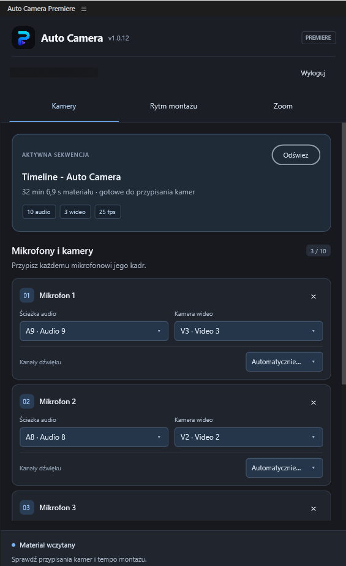
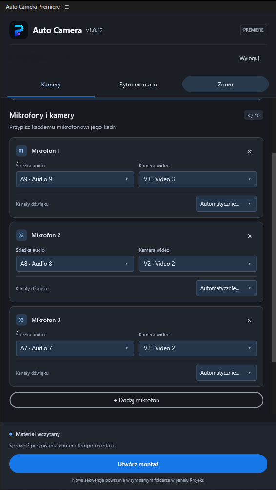
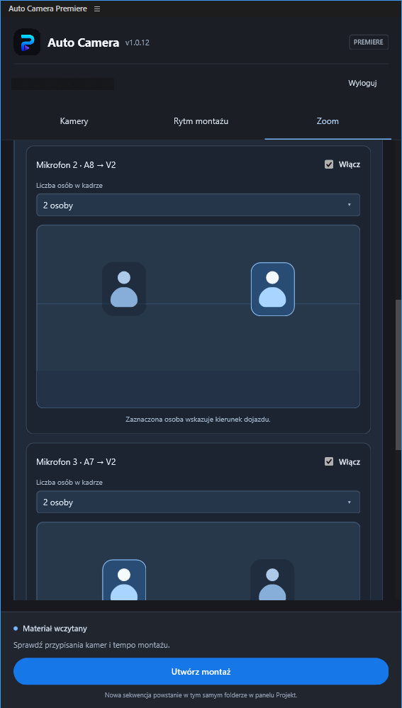

Cięcia sterowane mikrofonami
Wybór kamery opiera się na aktywności rozmówców. Do 10 przypisań pozwala łączyć kilka mikrofonów z jedną kamerą albo dać każdej osobie osobny kadr.
Automatyczny montaż wielokamerowy
Zamień nagraną rozmowę w edytowalny montaż wielokamerowy. Przypisz mikrofony do ścieżek kamer, dopasuj rytm i pozwól Auto Camera ułożyć ujęcia w Adobe Premiere Pro.
Premiere Pro 26.2+ · Windows i macOS · Panel UXP

Pracuj bezpośrednio w Premiere z kamerami i nagraniami mikrofonów ułożonymi już na osi czasu.
Odczytaj aktywną sekwencję i przypisz do 10 ścieżek mikrofonowych do ścieżek wideo. Użyj automatycznego rozpoznania kanału WAV albo wybierz go ręcznie.
Ustaw próg głosu, czas reakcji, podtrzymanie mówcy i minimalną długość ujęcia. Wyprzedzenie zmiany pozwala pokazać kolejną osobę, zanim zacznie mówić.
Wygeneruj osobną sekwencję ze zwykłymi, edytowalnymi klipami. Poprawiaj cięcia w Premiere, zachowując dostęp do oryginalnej sekwencji.
Funkcje
Wybór kamery opiera się na aktywności rozmówców. Do 10 przypisań pozwala łączyć kilka mikrofonów z jedną kamerą albo dać każdej osobie osobny kadr.
Dopasuj reakcję, podtrzymanie rozmówcy i minimalny czas ujęcia. Możesz pokazać kolejnego mówcę z wyprzedzeniem do dwóch sekund.
Dodawaj szeroki kadr w stałych lub losowych odstępach albo pomiędzy zmianami mówcy. Ustaw długość szerokiego ujęcia.
Skracaj przerwy na ścieżkach audio i wideo równocześnie. Ustaw próg, minimalny czas i margines przy słowach. Przycisk Auto dobiera próg na podstawie wybranych mikrofonów.
Wskaż osobę w kadrze z jedną, dwiema lub trzema osobami. Ustaw prędkość dojazdu i włączaj go osobno dla każdego mikrofonu oraz planu szerokiego.
Utwórz montaż na nowej górnej ścieżce wideo albo przycinaj istniejące ścieżki kamer w kopii sekwencji. Wynik pozostaje edytowalny w Premiere.
Ustawienia, przypisania kamer i sterowanie zoomem w jednym panelu. Kliknij zrzut, aby go powiększyć.

Przypisz każdemu mikrofonowi ścieżkę audio i kamerę, a następnie wybierz kanał źródłowy dźwięku.

Połącz różne mikrofony z tą samą kamerą, zachowując osobną konfigurację dla każdego rozmówcy.

Określ liczbę osób w kadrze i wskaż osobę, do której ma zbliżać się obraz. Włączaj ruch niezależnie dla każdego ujęcia.
Auto Camera pracuje na kopii sekwencji i zapisuje wynik jako osobny plik projektu. Obejrzyj automatyczny montaż, dopracuj cięcia i kontynuuj pracę w Premiere. Oryginalny plik projektu nie jest nadpisywany.
Najpierw przygotuj i zsynchronizuj nagrania. Auto Camera korzysta z ich położenia na osi czasu, aby przeanalizować mikrofony i utworzyć cięcia kamer.
Tak. Wynik zawiera zwykłe klipy Premiere w osobnej sekwencji. Możesz przesuwać cięcia i dalej montować ręcznie.
To cyfrowy dojazd zapisany klatkami kluczowymi pozycji i skali efektu Motion. Wybierasz osobę oraz prędkość; funkcja nie porusza fizyczną kamerą PTZ.
Obecna wersja analizuje źródłowe pliki WAV na przypisanych ścieżkach mikrofonowych, z automatycznym lub ręcznym wyborem kanału. Analiza nie obsługuje skompresowanego audio, zagnieżdżonych sekwencji, odwróconego odtwarzania ani zmian prędkości.
Napisz na support@pluginsforlive.com, aby ustalić dostęp i warunki licencji. Link do płatności dodamy do tej strony później.
Opowiedz nam o swoim sposobie pracy i zapytaj o dostęp do Auto Camera for Adobe Premiere.